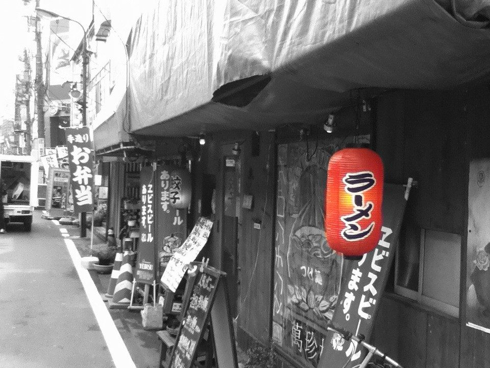
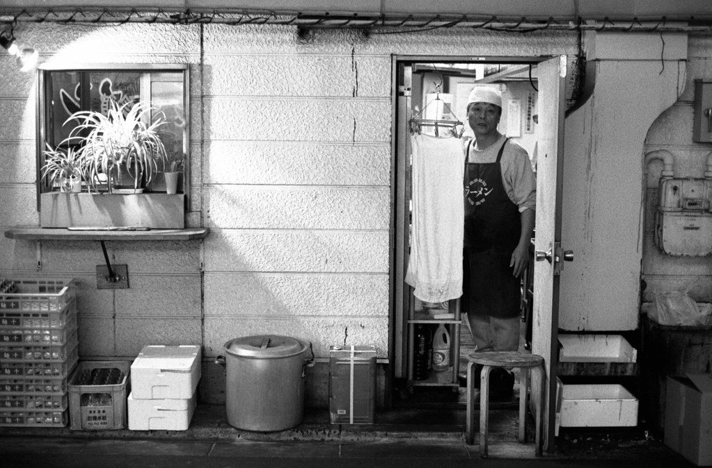
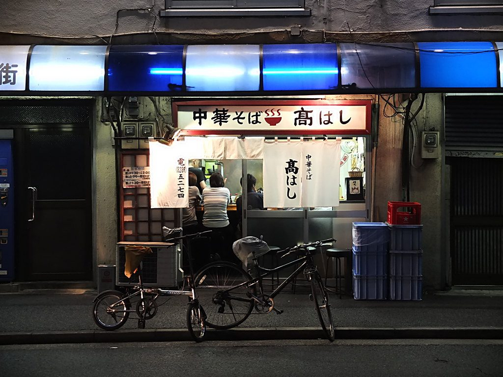
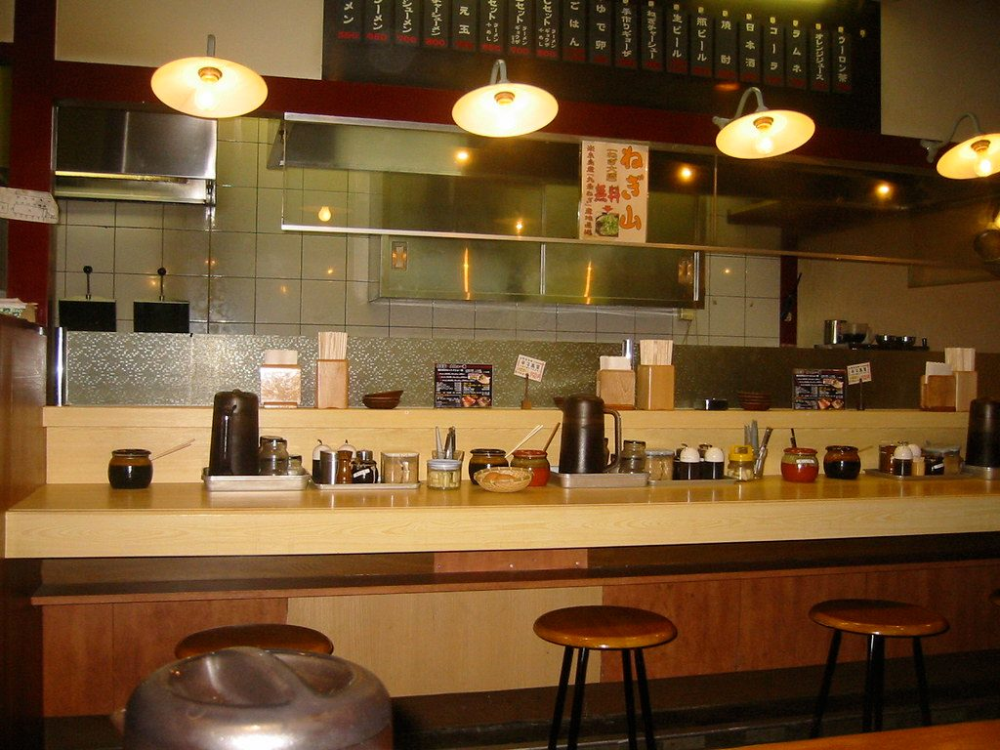
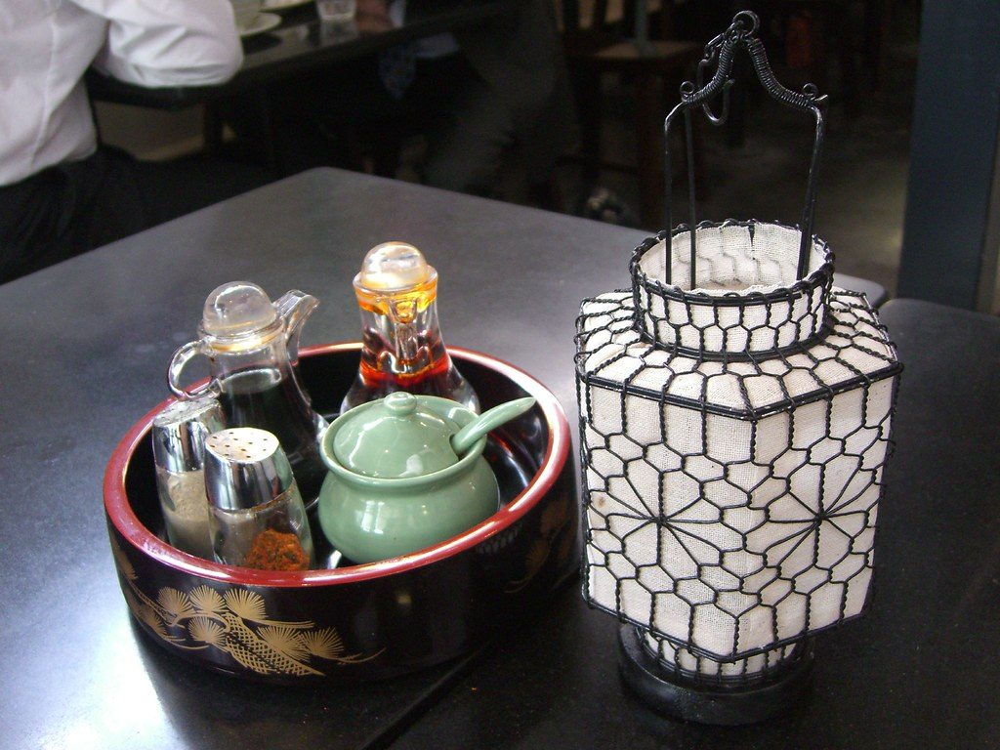

Caldo lento
Ningún caldo sale antes de tiempo. El tonkotsu hierve dieciocho horas y el shoyu reposa una noche entera antes de servirse.

De un puesto callejero en Sapporo a una barra de veintidós sitios en el casco histórico de Santiago.
波 Nami significa «ola»
Nami nace del encuentro entre dos costas: la de Hokkaido, donde Hiroshi creció entre cuencos de miso y vapor, y la gallega, donde descubrió que el producto del mar y la paciencia también se entienden aquí.
Por eso elegimos el nombre de la ola. Cocinamos ramen japonés de verdad, sin atajos, pero con lo mejor que tenemos cerca: cerdo celta, verduras de la Plaza de Abastos y algas de la costa de Lugo. Una barra pequeña, una carta corta y la misma regla desde el primer día: el caldo marca el tiempo.
歴史 Paso a paso
Tres generaciones, dos países y una olla que no se apaga. Baja para recorrer nuestra historia.

Tatsuo Nakamura abre un puesto de ramen de miso cerca del puerto de Otaru, en Hokkaido. Un solo caldo, ocho taburetes y una olla que no se apagaba nunca.

Con diecisiete años, Hiroshi empieza a fregar ollas en el local familiar, ya en Sapporo. Tarda cuatro años en poder preparar el caldo él solo.
Llega a Santiago para un intercambio de cocina de seis meses. Conoce a Uxía Varela, cocinera de Cambados, y decide quedarse. Durante cinco años cocina ramen en ferias y en casa de amigos.

Hiroshi y Uxía abren Nami en un antiguo bajo de la Rúa da Raíña. Empiezan con tres ramen y una barra de doce sitios.

Hoy somos ocho personas, servimos seis ramen y seguimos encendiendo la olla del tonkotsu cada tarde para el servicio del día siguiente.
心 Lo que nos mueve
Ningún caldo sale antes de tiempo. El tonkotsu hierve dieciocho horas y el shoyu reposa una noche entera antes de servirse.
Cerdo celta, huevos de corral de A Estrada, pulpo de la ría y verduras que compramos cada mañana en la Plaza de Abastos.
Amasamos el fideo cada mañana con harina de trigo, agua alcalina y sal. Lo que no se usa ese día, no se sirve al siguiente.
写真 Galería
Haz clic en una foto para verla en grande. Puedes moverte con las flechas del teclado.